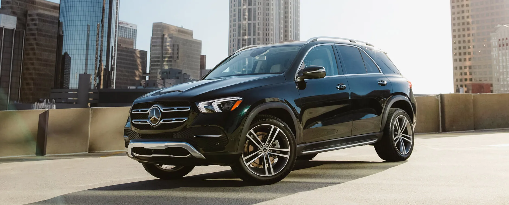

Certified pre-owned is when a previous owner has used it, however it will sell to you like it has never been used before.
This is a Mercedes-Benz GLE SUV, a luxury vehicle known for its strong presence, smooth performance, and everyday practicality. The black exterior, bold grille, and sharp LED headlights give it a powerful and modern look, while the elevated design highlights its capability and comfort. What makes this SUV especially good is how well it balances everything. It offers a spacious interior, advanced technology, and a smooth ride whether you are driving in the city or on longer trips. It also provides solid performance with confident handling, making it feel both safe and responsive. Overall, the GLE is a great choice because it combines luxury, versatility, and reliability into one well rounded vehicle.

Mercedes-Benz Certified Pre Owned vehicles, showing a lineup of luxury cars that still deliver strong performance and reliability even after being previously owned. The clean and polished look of the cars reflects the brand’s commitment to quality and attention to detail. What makes certified pre-owned Mercedes vehicles especially good is the value they offer. They go through thorough inspections and reconditioning to meet high standards, so buyers can trust their condition and performance. You still get many of the same luxury features, advanced technology, and smooth driving experience as a new car but at a more affordable price. Overall, it is a smart option for someone who wants the prestige and quality of Mercedes-Benz without paying full new car prices.
C-Class sedan from the Certified Pre Owned lineup, a luxury car known for its refined design and smooth driving experience. The clean silver finish, signature grille, and sleek body lines give it a classy and timeless look that represents Mercedes-Benz quality. What makes this car especially good is the value it provides. You get a high level of luxury, advanced features, and strong performance at a more affordable price compared to a brand new model. Certified pre-owned vehicles are carefully inspected and maintained, so they still deliver reliability and comfort. Overall, the C-Class is a great choice because it combines elegance, performance, and practicality in a way that fits both daily driving and a premium lifestyle.